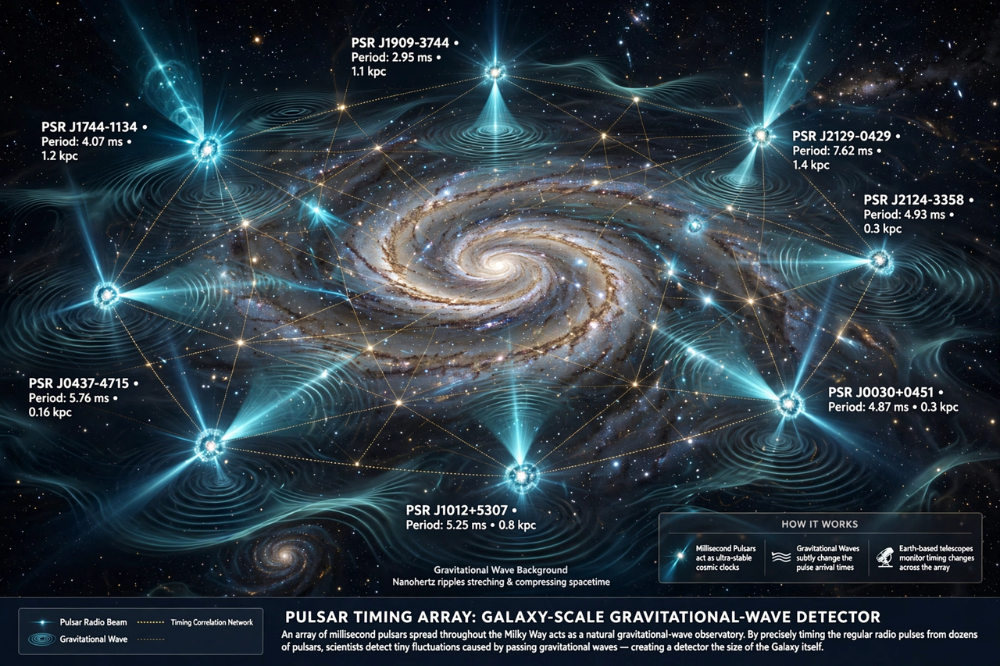

Gravitational wave background

The gravitational wave background (GWB) is a random background of gravitational waves permeating the universe, formed by the superposition of many independent, unresolved sources. It is the gravitational-wave analogue of the cosmic microwave background. Sources may include large populations of binary supermassive black holes, merging binary stars, and processes in the very early universe such as cosmic inflation, phase transitions, and cosmic strings.
| Type | Stochastic background of gravitational waves |
|---|---|
| Likely sources | Binary supermassive black holes; early-universe processes |
| Detection | Evidence reported by pulsar timing arrays (2023) |
Detection
Because the background is stochastic, it is detected statistically, through correlations between the measured signals at separated detectors. Pulsar timing arrays — collaborations including NANOGrav in North America, the European Pulsar Timing Array, the Parkes Pulsar Timing Array, and the International Pulsar Timing Array — monitor dozens of millisecond pulsars over decades, looking for the characteristic "Hellings–Downs" pattern of correlated timing deviations produced by nanohertz gravitational waves. In June 2023, several pulsar timing collaborations simultaneously announced strong evidence for such a background, most plausibly produced by the cosmic population of orbiting supermassive black hole binaries. Ground-based interferometers such as LIGO and Virgo constrain the background at higher frequencies (tens of hertz), while a primordial background from inflation remains below current sensitivity.
Significance
Measuring the background's spectrum can reveal the merger history of supermassive black holes across cosmic time, and could in principle carry information about physics in the first fractions of a second after the Big Bang — an era inaccessible to electromagnetic observation. Future space-based detectors such as LISA will probe the background at millihertz frequencies, where millions of galactic binary stars are expected to form a foreground.